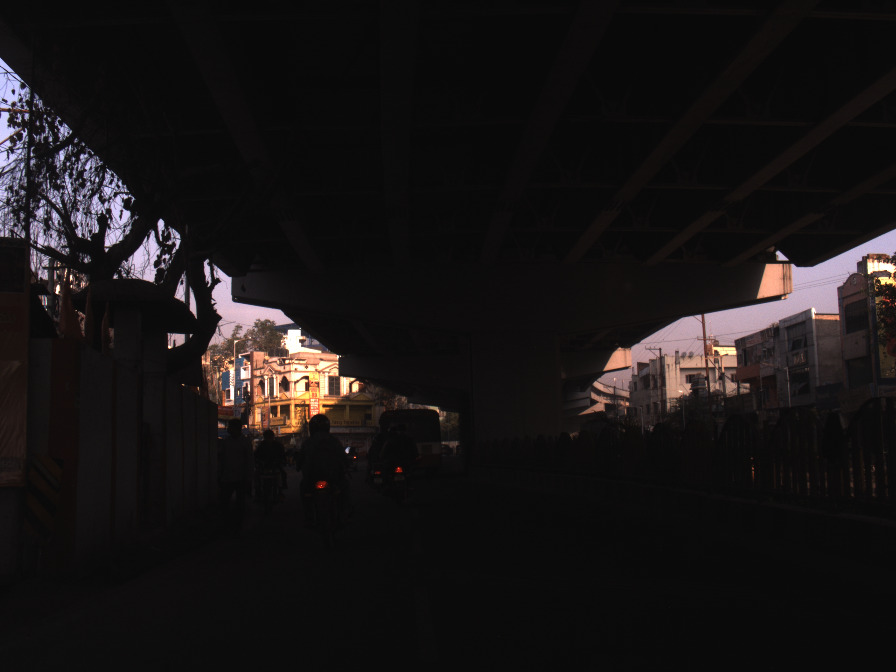
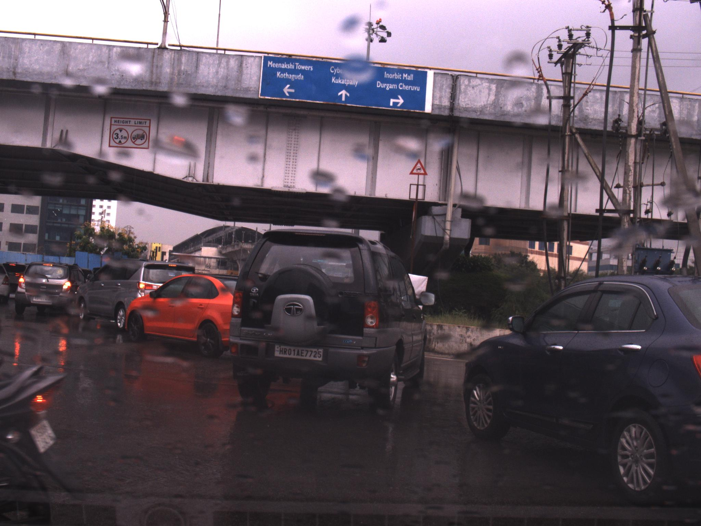

RGB-NIR COMPARISION.

FOGGY Conditions.

SNOW Conditions.

LOWLIGHT Conditions.

This project proposes a solution by fusing RGB (Red, Green, Blue) and NIR (Near-Infrared) imaging to enhance autonomous navigation in challenging weather conditions. RGB-NIR image fusion leverages the complementary strengths of visible and infrared light, providing richer information for scene understanding. By using the IDD-AW dataset and training a state-of-the-art segmentation model with fused modalities, we achieved a significant improvement in segmentation performance, with an mIoU increase of 4% compared to RGB-only model. Our results also indicate that a significant performance gains can be achieved with the by implemented more advanced image fusion techniques.
In recent years, there have been several incidents that have exposed the drawbacks of autonomous systems when operating in adverse weather conditions. Heavy rain, dense fog, lowlight, glare and snow have all caused ML models to mispredict, making it harder for these systems to make correct decisions and navigate safely. In snowy conditions, for example, self-driving cars have struggled to detect pedestrians and obstacles, while in fog, some systems have been completely unable to "see" their surroundings. Current autonomous navigation systems are often unreliable in adverse weather conditions such as rain, fog, and snow, where visibility is reduced, and sensors struggle to perform effectively. Traditional RGB imaging alone is not sufficient to handle these challenges, leading to errors in detecting drive scenes and making decisions. To improve perception in such difficult environments, a better approach is needed. Combining RGB imaging with Near-Infrared (NIR) images which are less impacted by poor visibility, can provide a clearer and more reliable view of the surroundings. The Near-Infrared range of light, having greater wavelengths than the visible range, can penetrate more through suspended particles in the camera’s view. This project aims to develop a solution that uses RGB-NIR fusion to enhance the accuracy, safety, and reliability of autonomous navigation systems in challenging weather conditions.
Obstacles included ensuring alignment between RGB and NIR data, which was addressed through manual and automated synchronization methods.
This project focuses on enhancing autonomous navigation in adverse weather using RGB-NIR image fusion. The approach begins with data acquisition from the IDDAW [1] and Dark Vision Dataset (DVD) [2], capturing driving scenes under poor lighting and harsh weather conditions. To ensure accuracy, image alignment will be applied to validate image pairs RGB and NIR images are fused using multispectral techniques, combining detailed color information with NIR’s ability to enhance visibility in low-light conditions. The fused images are then processed using deep learning-based segmentation models like DeepLab and InternImage, to identify key elements in drive scenes. To gauge the efficacy of fused RGB-NIR images, we will compare the improvement in image segmentation for a variety of adverse weather conditions individually.
@misc{moosavidezfooli2016deepfoolsimpleaccuratemethod,
title={DeepFool: a simple and accurate method to fool deep neural networks},
author={Seyed-Mohsen Moosavi-Dezfooli and Alhussein Fawzi and Pascal Frossard},
year={2016},
eprint={1511.04599},
archivePrefix={arXiv},
primaryClass={cs.LG},
url={https://arxiv.org/abs/1511.04599},
}
@inproceedings{shaik2024idd,
title={IDD-AW: A Benchmark for Safe and Robust Segmentation of Drive Scenes in Unstructured Traffic and Adverse Weather},
author={Shaik, Furqan Ahmed and Reddy, Abhishek and Billa, Nikhil Reddy and Chaudhary, Kunal and Manchanda, Sunny and Varma, Girish},
booktitle={Proceedings of the IEEE/CVF Winter Conference on Applications of Computer Vision},
pages={4614--4623},
year={2024}
}